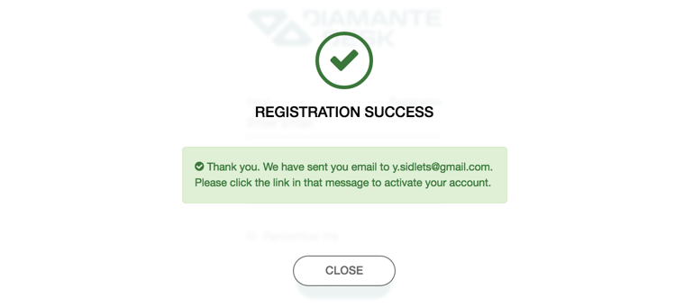

Portal
When a customer attempts to leave a request through a web site supported by DiamanteDesk, the system redirects the user to a request module at http://example.com/web/app.php/portal/. In order to create a ticket the user should either log in or register in case it is a first request.
If you are new to the system, complete the following steps for registration:
- Click Registration at the bottom of the log in screen. Registration screen opens.
- Provide your first name, last name, email and password in corresponding fields. Note: Required fields are marked with asterisk (*).
- Click Continue. After all the provided credentials are successfully saved, the system shows the following message: 
- Check your email box and follow a link there to confirm your registration. The system redirects you to the Sign In screen.
User screen
After a user logs into the system, he gets to a User Screen. Here is a screen that newly registered user should see:
A previously registered user, who has created requests in past, can look through the table with all the previous requests showing their:
- Key. Key is an identifier of the branch, where the request has been created. This identifier is automatically generated by taking the first character(s) of every word in brunch name and converting them to upper case (for example, Green Daisy - GD, Retailing - RTL, etc.)
- Date field displays the date when the request has been created.
- Subject is a short summary of an issue occurred.
- Priority field displays the selected priority of the created ticket (Low, Medium or High).
- Status field indicates the stage of solution (New, Open, Pending, In Progress, Closed, On Hold).
Add a New Ticket
To create a new request, a user shall add a ticket by completing the following steps:
- Click the Plus button at the right corner of the screen. Add New Ticket screen opens.
- Provide a short summary of a ticket in the Subject field.
- Type in the detailed description of a ticket in the Description field.
- Select the priority level of your ticket from the Priority drop-down list. The available options are:
- Low for a non-urgent request or issue that does not have critical effect on a production process.
- Medium for an important non-urgent request.
- High for a critical issue or an urgent request.
- In case there is a file that shall be attached to the ticket (image or document), click Drop files here to attach and select the required file from your local machine.
- Once you provided all the necessary information, click Submit.
How to swich user registration on/off
Tickets can be also created without the required registration. To configure this option:
- Go to System > Configuration.
- On the System Configuration panel click DiamanteDesk to expose the available options and choose Channels. The Channels screen opens.
- Define whether a user shall complete the registration process before creating a new ticket in the Web section.
By default, registration is always required. To change this configuration, make sure that the Use Default check box is clear and set the Registration required field to Yes or No option.
To save the changes made, click Save Settings at the top right corner of the screen.